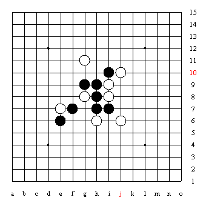

奖品吉他提供者为五子棋爱好者张方，在此真诚感谢！
（转自中国连珠网）
http://www.rifchina.com/Article/ShowArticle.asp?ArticleID=5787
［ 逆刃 于 2010-1-18 18:43:06 时花20金币送鲜花一朵］
迎春PK第一期题
谜语：规则名竞猜
1、慈禧
2、岩石厂破产
3、排长升迁
4.
5.（注：音同字不同）
迎虎年春节五子棋智力大PK
主办：中国连珠网
时间：2010年1月20日--2月12日
题目：五子棋相关，每叁天出一期题。出下一期题目时同时公布上期答案。
规则：将答案短信至13321151332，注明第几题答案，死活题标明坐标。按短信收到时间排序，排名得分为答题总人数递减（如答题总人数为10，最快回复短信且答对者的分数就为10，其次为9……），最后得分最多者为PK胜利者。
奖励：最后胜利者获得独乐吉他一把，2-6名棋盘各一张，前6名智运丛书五子棋各一本。
* 以正确答案短信记时。
最后统计取每期人数最少人数的为每期第一名的得分，第二名以下递减，然后再合计总得分，分高者排在前。
（转自中国连珠）
五子棋面世规则选介（张铁良）
五子棋行棋规则中有交换规则，因此下棋最开始的先走方，我们称之假先方，下棋最开始的后走方，我们称之为假后方（这里的假字有“暂时”的意思）。假先方（简称：假先）和假后方（简称：假后）这两个名词在我国现行五子棋规则中还没有明确规定出来。但是，为了叙述方便，我们在这里加以引用。
第一、目前我国全国正式比赛采用的五子棋行棋规则（即：**棋院五子棋竞赛规则2009年版行棋规则部分）：
1）由比赛按轮次指定或者猜先来决定假先方与假后方，由假先方落前3手（2黑1白），要求是第1手黑棋必须落在天元，第2手白棋必须落在天元周围的8个点，第3手黑棋必须落在以天元为中心的5*5区域之内；按照这样规定落子，前三手（2黑1白）必然会形成现在正式比赛中采用的26种开局之一的局面（注：形状对称的算一种开局）。（即：指定开局）
2）假后方此时可以选择交换，当然也可以不换，假先方不能拒绝，此步骤之后，便决定出了此局正式的黑方与白方（即：三手可交换）；
3）白方落第4手，之后黑方给出两个第5手（如果前4手有对称性质，黑方给出的两个第5手不得关于前4手有任何形式的对称<含:轴对称和中心对称>，需要注意的是判断对称时不考虑棋盘盘端的因素，只考虑棋子的棋形即可）；
4）白方将黑方给出的两个第5手拿掉一个，保留一个，保留的一子作为第5步棋（即：五手两打<2010世团赛采用的山口规则为约定五手N打>），之后双方按**棋院五子棋竞赛规则轮流落子，黑棋有禁手白棋无禁手。（黑棋有三三禁手、四四禁手和长连禁手三种禁手，禁手区分请参照**棋院五子棋竞赛规则2009年版或者参考智运丛书《五子棋知识》一书。）
5）黑棋只有一种取胜方法，即：只能连成五获胜，但是不能通过走禁手成五。白棋有两种取胜方法：第一，白棋可以没有任何禁手限制成五胜（白棋长连视同成五），第二，黑棋走禁手（无论是自愿还是被逼迫），白棋指出来，白棋获胜。胜负判断按**棋院五子棋竞赛规则2009年版或者参考智运丛书《五子棋知识》一书。
6）对局中双方皆有无限次的PASS权――自己放弃一手行棋权的权利，如果双方紧挨着先后两手均PASS，棋局算和棋。
现行规则，由于五手两打情况下，26种开局的绝大多数开局变化，五子棋高段位棋手已经研究普遍公认，均为黑必胜或者黑局势大优。因此，五子棋棋手以及广大普通爱好者，普遍提出了五子棋规则必须改革的呼声。山口和坂田两个规则是基本延续了现行规则下的进步版本，与现行五手两打规则变化较小，现在国际上已经开始进行试验赛。特别是此次五子棋最大的国际民间组织（RIF）在日本举办的2010年五子棋世界团体赛将采用山口规则进行正式的验证，因此国内外也掀起了山口规则的研究热潮。
第二、2010年五子棋世界团体锦标赛采用的山口规则：（与我国目前全国赛规则相同部分请参照**棋院五子棋竞赛规则2009年版进行理解）
山口规则：假先方指定26种开局之一（即前3手），并也由假先方提出黑第5手的打点数量（依然不能关于前4手对称，且判断时不考虑盘端）；假后方根据自己需要选择持黑还是持白。按规则和约定五手的打点个数（白方从这些五手打点中留下一个作为正式的第5步棋），完成前5手后，双方轮流落子，黑方单方有禁手，双方皆有PASS权。其他与我国目前全国赛规则相同，请参照**棋院五子棋竞赛规则2009年版或者参考智运丛书《五子棋知识》一书进行理解。
第三、2009年RIF大会决议确认的另一个即将在国际比赛试验的规则（坂田规则或称Sakata规则）：坂田规则(Sakata规则)是日本已故前辈坂田吾朗九段提出的一种新规则。Sakata即“坂田”的日文发音。
1. 假先方下前三手棋（26开局之一）。
2. 假后方下第4和第5手棋（黑白各一）。
3. 假先方选择执黑还是持白（即：选择是否交换），对方不能拒绝。
其他与我国目前全国赛规则相同，请参照**棋院五子棋竞赛规则2009年版或者参考智运丛书《五子棋知识》一书进行理解。
第四，由我国北京那威五子棋俱乐部推出的那氏五子棋竞赛规则，也是一种较好的延续了我国五子棋现行规则形式的进步规则尝试。由于也进行了现实的试验比赛，取得较好的效果，我们也在这里做一介绍。
1.15路棋盘（同**五子棋竞赛规则）
2.黑棋第一手（元点）可在棋盘上D4-D12-L12-L4所形成的矩形区域内选择任意一点，具体位置由假黑白双方确定：设棋盘上任意一个星位的坐标是（1，1），天元坐标是（5，5）。假黑白双方各任意抓五个以内（包括五个）相应黑白子，黑子数确定从任一星位开始元点的横坐标，白子数确定黑选定的星位元点的纵坐标。
3.黑指定开局（前三手棋由假黑方行，除第一手黑棋落在双方选定的位置外
迎春PK第二期题
根据大家提意：应答者在QQ：133211513 中留言也可。
选择题
1、五子棋历史行程
A、中国-日本-东欧-中国
B、中国-朝鲜-日本-东欧-中国
C、中国-东欧-日本-中国
2、国际连珠联盟第一任主席
A、彼得•约翰逊
B、托米•马泰尔
C、达富弘之
D、安东•麦力得
3、康柏杯五子棋国际名人邀请赛在97年北京举行
A、中国棋院
B、北京饭店
C、温特莱大酒店
D、北京文慧宾馆
4、2005年中韩五子棋对抗赛成绩
中国：韩国
A、10：6
B、9：7
C、8：8
D、12：4
5、五子棋设立为我国正式开展的体育项目的时间是
A、2002年
B、2003年
C、2006年
D、2009年
上期答案
1、慈禧----那氏规则
2、岩石厂破产---（岩中的石厂没了（破），岩字分开（破））山口规则
3、排长升迁---（排长升了，那就成了连长，原来的连长自然就换了）连换规则
4、（限行图标）--（道路限行标志，“限”同音化就成了“现”）现行规则
5、（切果动画）--（果被切开，就是将果分开，成了“木、田”，最后那个动作是将果放“反”。这样就组合成“板田”同音化）坂田规则
迎虎年春节五子棋智力大PK
主办：中国连珠网
时间：2010年1月20日--2月12日
题目：五子棋相关，每叁天出一期题。出下一期题目时同时公布上期答案。
规则：将答案短信至13321151332，注明第几题答案，死活题标明坐标。按短信收到时间排序，排名得分为答题总人数递减（如答题总人数为10，最快回复短信且答对者的分数就为10，其次为9……），最后得分最多者为PK胜利者。
奖励：最后胜利者获得独乐吉他一把，2-6名棋盘各一张，前6名智运丛书五子棋各一本。
* 以正确答案短信记时。
最后统计取每期人数最少人数的为每期第一名的得分，第二名以下递减，然后再合计总得分，分高者排在前。
(转自中国连珠）
迎春PK第三期题
说出下面决定取胜的第一手棋的正确坐标
图一
图二
图三
图四
图五
上期答案：红色粗体
选择题
1、五子棋历史行程
A、中国-日本-东欧-中国
B、中国-朝鲜-日本-东欧-中国
C、中国-东欧-日本-中国
2、国际连珠联盟第一任主席
A、彼得•约翰逊
B、托米•马泰尔
C、达富弘之
D、安东•麦力得
3、康柏杯五子棋国际名人邀请赛在97年北京举行
A、中国棋院
B、北京饭店
C、温特莱大酒店
D、北京文慧宾馆
4、2005年中韩五子棋对抗赛成绩
中国：韩国
A、10：6
B、9：7
C、8：8
D、12：4
5、五子棋设立为我国正式开展的体育项目的时间是
A、2002年
B、2003年
C、2006年
D、2009年
迎虎年春节五子棋智力大PK
主办：中国连珠网
时间：2010年1月20日--2月12日
题目：五子棋相关，每叁天出一期题。出下一期题目时同时公布上期答案。
规则：将答案短信至13321151332，或QQ：133211513 中留言。注明第几题答案，死活题标明坐标。按短信收到时间排序，排名得分为答题总人数递减（如答题总人数为10，最快回复短信且答对者的分数就为10，其次为9……），最后得分最多者为PK胜利者。
奖励：最后胜利者获得独乐吉他一把，2-6名棋盘各一张，前6名智运丛书五子棋各一本。
* 以正确答案短信记时。
最后统计取每期人数最少人数的为每期第一名的得分，第二名以下递减，然后再合计总得分，分高者排在前。
――――中国连珠网
迎春PK第四期题
竞猜开局名称
1.日
生
2. 腊
3. 江城回渌水，（ ）使人迷。-李白
4. 一道光，亮闪闪，划过天空像支箭，一下跑了千万里，眨眨眼睛看不见。
5. 一月一日生日
上期答案
1、k8 ， 2、g7 ，3、i13或f12 ，4、d6 ，5、f9。
迎虎年春节五子棋智力大PK
主办：中国连珠网
时间：2010年1月20日--2月12日
题目：五子棋相关，每叁天出一期题。出下一期题目时同时公布上期答案。
规则：将答案短信至13321151332，或QQ：133211513 中留言。注明第几题答案，死活题标明坐标。按短信收到时间排序，排名得分为答题总人数递减（如答题总人数为10，最快回复短信且答对者的分数就为10，其次为9……），最后得分最多者为PK胜利者。
奖励：最后胜利者获得独乐吉他一把，2-6名棋盘各一张，前6名智运丛书五子棋各一本。
* 以正确答案短信记时。
最后统计取每期人数最少人数的为每期第一名的得分，第二名以下递减，然后再合计总得分，分高者排在前。
灯谜知识简介
1.定义与作用
1.1.定义
灯谜是利用汉字可变化的特点，按照一定的规律进行形、音、义的变异的答问式的联想游戏。
1.2.作用
归纳起来，灯谜主要有娱乐身心、增知益智和宣传教育三个方面的作用
2.灯谜的结构
我们接触到一条灯谜，就会发现它至少有三个组成部分，一个是出谜人写的题目文字，灯谜的术语叫“谜面”；一个是写在“谜面”后提示猜谜人答题范围的语句，灯谜的术语叫“谜目”；另一个是由猜谜人回答的答案，灯谜的术语称“谜底”。如：
永远学先进（礼貌用语）老师好
谜面谜目谜底
有的谜还要加“谜格”。另外我们在猜谜时，有时会遇到一些谜目的简称，如不解其意会不知所措，现将主要的几种解释如下：
2.01.聊目（志目）＝《聊斋志异》篇目名；
2.02.五唐＝《唐诗三百首》中的五言诗句；
2.03.七千＝《千家诗》中的七言诗句；
2.04.六才人名＝《西厢记》杂剧人名（清金圣叹称之为第六才子书）；
2.05.泊人《水浒》梁山好汉人名，仅限一百零八将（泊，水泊梁山简称）；
2.06.泊浑（泊号）＝《水浒》中一百零八将绰号；
2.07.石人（红人）＝《红楼梦》人名；
2.08.列人＝东周列国人名；
2.09.时人＝当代名人；
2.10.影人＝电影演员；
2.11.视目＝电视剧（片）名；
2.12.市招＝市面上招牌广告用语，如：应时点名、打气二角；
2.13.离合字＝先离后合或先合后离的字中的合体字，如：石更硬、埋土里。
3.灯谜的规则
猜谜和制谜都要遵循四大规则：
3.1.谜面要成文
即谜面文字要合乎文法，要自然流畅。这个要求主要是针对自撰的谜面而言，如：
3.1.1.“示土”（单位名）合作社
3.1.2.“言火火”（成语）混为一谈。这两个谜面是为了谜底硬凑的，显然不成文。
3.2.面底不相犯
这条规则是说凡是谜面上出现的文字，绝对不能在谜底中重复出现。如以“悬崖勒马”为面猜一国名“危地马拉”，“马”字就重了。这条谜可将谜面改为“悬崖勒缰”。再如以“长江后浪推前浪”为面，猜物理名词，底为“冲击波”，若猜“前进波”那就犯面了。
3.3.扣合无闲字
这条规则是说，谜面中每个字的意思在谜底中都要得到落实，不能有荒废的闲字。如以“红色娘子军”猜电影“女兵”，谜面中的“红色”就是闲字，再如“七仙女思凡”猜电影二“希望、在人间”，谜面中的“七仙女”也是闲字。有些谜扰意相扣（多取成句），则另当别论，如“年终算总帐”猜五唐一句“花落知多少”。谜面中的“年终”二字，不能视为闲字。
3.4.成谜要别解
别解是灯谜的最重要的一条规则，也可以说是整个灯谜的核心和灵魂。什么是别解？别解就是利用汉字一字（词）多义以及笔画组合的特点，使其改变原意去解释。如“母亲”一词，本义是名词性称谓，现在我们把“亲”字的意思改变一下，取一个“亲吻”之意，这样，“母亲”一词也就变成了主谓词组,与原义大相径庭，然后我们再给别解后的“母亲”配一个面“***吻”，一条谜就成了。这就是“义”的别解。再如“树”字。我们可以把它看成是“木”“又”“寸”三字（笔画）的组合，也可看成是“权”与“寸”或者“木”与“对”或者“村”与“又”的组合，据此，我们便分别配上“十分有权”（一寸为“十分”），“向着东方”（东方为“木“），“又到村里”等谜面，这就是“形”的别解。“音”的别解一般都与“义”的别解相关。如“早上少云”猜一语种“朝鲜语”，谜底中的“朝”就是先由“cháo”音别解为“zháo”音，再带动意思的别解。
与“别解”相对是“直解”，一条谜（实际上已不能称它为谜）如果犯了“直解”的毛病，就索然无味了，如“山水甲天下”猜一城市，倘若猜为桂林，那就是解释了。正确的底应是“汕头”。再如“清明前一日”猜一节日，只能猜“元宵”，若猜“寒食”也会让人倒味口。
灯谜的规则主要有以上四种，至于其它的“用字要规范”，“举事要符实”等，不仅是灯谜创作的基本规则，也是其它文学创作的起码要求。
4.灯谜的谜体
谜体是
迎春PK第五期题
选择题
中央5五子棋电视讲座《黑白世界》开播时间
A、1995年
B、1996年
C、1998年
D、1997年
《北京青年报》连载五子棋知识最初在
A、1992年
B、1993年
C、1994年
D、1995年
日本著名老将三森政南在日本名人战中最好成绩
A、1
B、2
C、3
D、4
中国棋院最早颁发五子棋段级位时间
A、2000年
B、2002年
C、2003年
D、2006年
首届全国五子棋锦标赛是在
A、2002年
B、2004年
C、2006年
D、2007年
上期答案
1.日
生-----疏星（“星”的上下两部分间隔大，疏远了）
2. 腊----溪月（“腊”的两部分拆开读，同音化）
3. 江城回渌水，（ 花月 ）使人迷。-李白
杂歌谣辞-襄阳曲-李白
襄阳行乐处，歌舞白铜L。江城回渌水，花月使人迷。
山公醉酒时，酩酊襄阳下。头上白接篱，倒着还骑马。
岘山临汉江，水渌沙如雪。上有堕泪碑，青苔久磨灭。
且醉习家池，莫看堕泪碑。山公欲上马，笑杀襄阳儿。
4. 一道光，亮闪闪，划过天空像支箭，一下跑了千万里，眨眨眼睛看不见。---流星
5. 一月一日生日----明星
迎虎年春节五子棋智力大PK
主办：中国连珠网
时间：2010年1月20日--2月12日
题目：五子棋相关，每叁天出一期题。出下一期题目时同时公布上期答案。
规则：将答案短信至13321151332，或QQ：133211513 中留言。注明第几题答案，死活题标明坐标。按短信收到时间排序，排名得分为答题总人数递减（如答题总人数为10，最快回复短信且答对者的分数就为10，其次为9……），最后得分最多者为PK胜利者。
奖励：最后胜利者获得独乐吉他一把，2-6名棋盘各一张，前6名智运丛书五子棋各一本。
* 以正确答案短信记时。
最后统计取每期人数最少人数的为每期第一名的得分，第二名以下递减，然后再合计总得分，分高者排在前。
( 中国连珠）
迎春PK第六期题
指出下面决定胜利的第一手棋的坐标
一

二
三
四
五
上期答案（红体字为正确答案）
选择题
中央5五子棋电视讲座《黑白世界》开播时间
A、1995年
B、1996年
C、1998年
D、1997年
《北京青年报》连载五子棋知识最初在
A、1992年
B、1993年
C、1994年
D、1995年
日本著名老将三森政南在日本名人战中最好成绩
A、1
B、2
C、3
D、4
中国棋院最早颁发五子棋段级位时间
A、2000年
B、2002年
C、2003年
D、2006年
首届全国五子棋锦标赛是在
A、2002年
B、2004年
C、2006年
D、2007年
迎虎年春节五子棋智力大PK
主办：中国连珠网
时间：2010年1月20日--2月12日
题目：五子棋相关，每叁天出一期题。出下一期题目时同时公布上期答案。
规则：将答案短信至13321151332，或QQ：133211513 中留言。注明第几题答案，死活题标明坐标。按短信收到时间排序，排名得分为答题总人数递减（如答题总人数为10，最快回复短信且答对者的分数就为10，其次为9……），最后得分最多者为PK胜利者。
奖励：最后胜利者获得独乐吉他一把，2-6名棋盘各一张，前6名智运丛书五子棋各一本。
* 以正确答案短信记时。
最后统计取每期人数最少人数的为每期第一名的得分，第二名以下递减，然后再合计总得分，分高者排在前。
迎春PK第七期题
竞猜五子棋术语
1.123457890
2.3.9999999999999999
3.舌
4.川
5.捡担子挑
上期答案
一．F9
二．G9
三．G11
四．J7
五．J8
迎虎年春节五子棋智力大PK
主办：中国连珠网
时间：2010年1月20日--2月12日
题目：五子棋相关，每叁天出一期题。出下一期题目时同时公布上期答案。
规则：将答案短信至13321151332，或QQ：133211513 中留言。注明第几题答案，死活题标明坐标。按短信收到时间排序，排名得分为答题总人数递减（如答题总人数为10，最快回复短信且答对者的分数就为10，其次为9……），最后得分最多者为PK胜利者。
奖励：最后胜利者获得独乐吉他一把，2-6名棋盘各一张，前6名智运丛书五子棋各一本。
* 以正确答案短信记时。
最后统计取每期人数最少人数的为每期第一名的得分，第二名以下递减，然后再合计总得分，分高者排在前。
(转自中国连珠）
迎春PK第八期题
选择题
1、五子棋最早进入北京龙潭湖庙会的时间
A、1994年
B、1995年
C、1996年
D、2001年
2、中国有几次一人出国参加世界比赛
A、1
B、2
C、3
D、4
3、中国参加了几届世界连珠团体锦标赛
A、1
B、2
C、3
D、4
4、正式的世界比赛中出现过“刀”型开局且有比赛结果吗？
A、有
B、无
5、河北举办过几次全国赛
A、1
B、2
C、3
D、4
上期答案
1.123457890-----六腐（6没有）
2.3.9999999999999999---冲四（接近4）
3.舌----活三（活的三点跑了）
4.川-----眠三（三躺下了）
5.捡担子挑---认负
迎虎年春节五子棋智力大PK
主办：中国连珠网
时间：2010年1月20日--2月12日
题目：五子棋相关，每叁天出一期题。出下一期题目时同时公布上期答案。
规则：将答案短信至13321151332，或QQ：133211513 中留言。注明第几题答案，死活题标明坐标。按短信收到时间排序，排名得分为答题总人数递减（如答题总人数为10，最快回复短信且答对者的分数就为10，其次为9……），最后得分最多者为PK胜利者。
奖励：最后胜利者获得独乐吉他一把，2-6名棋盘各一张，前6名智运丛书五子棋各一本。
* 以正确答案短信记时。
最后统计取每期人数最少人数的为每期第一名的得分，第二名以下递减，然后再合计总得分，分高者排在前。
迎春PK收官题
说出下面VCF题最后
一
二
三
四
红体字为上期正确答案
1、五子棋最早进入北京龙潭湖庙会的时间
A、1994年
B、1995年
C、1996年
D、2001年
2、中国有几次一人出国参加世界比赛
A、1
B、2
C、3
D、4
3、中国参加了几届世界连珠团体锦标赛
A、1
B、2
C、3
D、4
4、正式的世界比赛中出现过“刀”型开局且有比赛结果吗？
A、有
B、无
5、河北举办过几次全国赛
A、1
B、2
C、3
D、4
迎虎年春节五子棋智力大PK
主办：中国连珠网
时间：2010年1月20日--2月12日
题目：五子棋相关，每叁天出一期题。出下一期题目时同时公布上期答案。
规则：将答案短信至13321151332，或QQ：133211513 中留言。注明第几题答案，死活题标明坐标。按短信收到时间排序，排名得分为答题总人数递减（如答题总人数为10，最快回复短信且答对者的分数就为10，其次为9……），最后得分最多者为PK胜利者。
奖励：最后胜利者获得独乐吉他一把，2-6名棋盘各一张，前6名智运丛书五子棋各一本。
* 以正确答案短信记时。
最后统计取每期人数最少人数的为每期第一名的得分，第二名以下递减，然后再合计总得分，分高者排在前。
祝广大五子棋爱好者虎年春节吉祥！